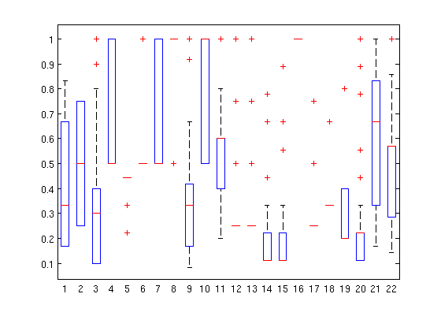

Application: The Classic Mushroom Dataset
Introduction and Pre-Processing
This page documents my experience trying to mine the mushroom dataset. It explores my first major application of various data mining tools, including Knime, Weka, and MatLab. I attempted to solve the following questions:
- Can I generate summary statistics that help describe the data?
- Can the edible and poisonous data objects be distilled into groups?
- Can a classification model be created that can predict whether a mushroom is edible or poisonous?
- Do any anomalies exist in the dataset?
- Can any association rules be generated from this dataset?
The format of this dataset was not ideal for mining. It consisted of a set of records with 22 attributes and a class label, poisonous or edible. All of the attribute values were nominal. Each field had a set of letters as possible values. For example, the first attribute "cap-shape" could have a value of {b, c, x, f, k, s} which stood for {bell, conical, convex, flat, knobbed, sunken} respectively. Since I was using MatLab to generate my summary statistics, I needed to convert each of these nominal letter values into a numeric value. This would also be necessary for many of the data mining tasks I had ahead of me, so pre-processing the data into this form was my first objective. In order to do this I wrote a ruby script which you can find in the "code" directory. The meat of this code was a function that converted nominal values into decimal ones:
This function assigns a value, between 0 and 1, to each nominal value in the set of valid values for a field. It does this by finding how many possible values there are (N), and then arbitrarily assigning each values an index between 1 and N. This index is then divided by N to create a decimal value between 0 and 1. A map is created, mapping each nominal value to it's new decimal value, so the the input file can be iterated through again to create a new file with decimal values instead of nominal ones. My script produced the "mushroom.decimal-data.csv" file in the "data" directory. A key for the nominal to decimal conversion can be found in "data/nominal_to_binary_key.txt", and the original data is in "data/mushroom.data.csv".
Summary Statistics
Now that I had decimal data to feed to MatLab, it was time to generate summary statistics. Summary statistics are often displayed in a table, and include measures such as median, mean, and standard deviation of a field. This format, however, becomes cumbersome as the dimensions of your dataset increases. Since this measure is taken for each field, our data set would have 4 or 5 measures times 22 attributes, for a total of 110 different statistics. This is a large number to quickly take in, and defeats the purpose of being able to quickly observe a summary of the data. For this reason, and because I'm new to MatLab and wanted to play with it's visualization features, I decided to display the summary statistics in a box-plot. This provides a much quicker summary, and made it easier for me to get summary statistics by class. When working with a dataset like this, where class labels are provided, this approach allows one to quickly see any stark differences between the attributes of the classes. This may provide an early clue about important attributes to classify or cluster upon. If you see, for instance, that most of the edible mushrooms have values for cap-shape around the conical value, while poisonous tend to have values more around the flat value, then that would be an important attribute to cluster or classify on. Here are the summary statistics I got for edible and poisonous mushrooms:
Edible Mushrooms
Poisonous Mushrooms

The above box-plots have the attributes, in order, where cap-shape is 1 and habitat is 22, from left to right on the X-axis. The Y-axis is the decimal value for that attribute (which I calculated in the pre-processing stage). A box-plot is like looking down on a Gaussian bell curve for each attribute. The blue box is where most of the values lie, and spans from the 25th through 75th percentile of the data. The red line is the median, or 50th percentile, of the data. The black "whiskers" represent data on the edges of the distribution. Finally, the red "+" marks are "outliers" that are outside the standard distribution. Look at field 4, which represents the presence of bruises. There is an easily noticeable difference between the edible and poisonous mushrooms. The edible mushrooms have more distribution between bruises and not, while almost no poisonous mushrooms have bruises. The box-plot allows us to quickly and easily see this difference.
Clusters and Groups
A major purpose of this exercise was to develop a model to determine if a mushroom is edible or poisonous based it's attributes. I noticed a major difference in the bruising, but that's not a definitive enough criteria. In order to create a model, I needed to cluster or classify the data. The latter approach would prove to be much more successful.
My initial clustering attempt was to use a K-Means clustering in Knime. I set a K of 2, since there are two groups we are looking for, edible and poisonous. This resulted in a 100% error rate, meaning no mushrooms where grouped accurately. This lead me to think the data might not be globular, and so I needed a different clustering algorithm. I wanted to try DBSCAN, and since I couldn't figure out how to do this (or what it was called) in Knime I switched to WEKA. DBSCAN found 20 "clusters", of which it was able to classify one poisonous and one edible, resulting in only 37% of the data being correctly classified. This means that 5,100 records, or about 63% of the data, were incorrectly clustered. My guess is this data has too many dimensions for clustering to work well. Either that, or the nature of the data is not suited for clustering. Whatever the reason, my clustering results (shown below) were abysmal, proving these data objects cannot easily be distilled into meaningful groups.
DBSCAN Results
| Cluster | Records | % of Dataset | Class label |
|---|---|---|---|
| 0 | 256 | 3% | None |
| 1 | 1000 | 12% | None |
| 2 | 768 | 9% | None |
| 3 | 2016 | 25% | Edible |
| 4 | 96 | 1% | None |
| 5 | 192 | 2% | None |
| 6 | 1312 | 16% | Poisonous |
| 7 | 96 | 1% | None |
| 8 | 864 | 11% | None |
| 9 | 48 | 1% | None |
| 10 | 48 | 1% | None |
| 11 | 864 | 11% | None |
| 12 | 32 | 0% | None |
| 13 | 8 | 0% | None |
| 14 | 192 | 2% | None |
| 15 | 144 | 2% | None |
| 16 | 144 | 2% | None |
| 17 | 18 | 0% | None |
| 18 | 18 | 0% | None |
| 19 | 8 | 0% | None |
Classification
Where clustering failed, classification prospered. Since the data was already loaded into WEKA, a classification was only a tab away (that and Knime kept giving me Java heap errors when I tried to create an ANN). I used an ANN, or as WEKA calls it, a Multilayer Perception. I had 22 input nodes, representing the values for the various attributes. The output layer had two nodes, a and b (see confusion matrix below), where a was 1 if the mushroom was poisonous, and 0 if not, while b was 1 if the mushroom was edible, and 0 if not. The results of this classification were fantastic. Just over 99% of the instances were correctly classified, with only 72 edible mushrooms being incorrectly classified as poisonous. This could be caused by the mushrooms that were classified as poisonous because it was unknown if they were edible. This may have lead to some edible mushrooms being incorrectly labeled as poisons, which would explain the slight error in my classifier. However, irregardless of the reasons, having edible mushrooms misclassified as poisonous is much better than having poisonous mushrooms classified as edible. Thus, this classifier could very well be a safe way to determine which mushrooms I can and can't eat. So, can a classification model be created that can predict whether a mushroom is edible or poisonous? Yes, I believe it can.
Classifier Summary
| Correctly Classified Instances | 8052 | 99.1137 % |
| Incorrectly Classified Instances | 72 | 0.8863 % |
| Kappa statistic | 0.9823 | |
| Mean absolute error | 0.0092 | |
| Root mean squared error | 0.0941 | |
| Relative absolute error | 1.8498 % | |
| Root relative squared error | 18.8419 % | |
| Total Number of Instances | 8124 |
Detailed Accuracy By Class
| TP Rate | FP Rate | Precision | Recall | F-Measure | ROC Area | Class | |
|---|---|---|---|---|---|---|---|
| 1 | 0.017 | 0.982 | 1 | 0.991 | 0.988 | poisonous | |
| 0.983 | 0 | 1 | 0.983 | 0.991 | 0.988 | edible | |
| Weighted Avg. | 0.991 | 0.008 | 0.991 | 0.991 | 0.991 | 0.988 |
Confusion Matrix
| a | b | <-- classified as |
|---|---|---|
| 3916 | 0 | a = poisonous |
| 72 | 4136 | b = edible |
Anomaly Detection
I had hoped to play around with MatLab a little for this project, but as you can see from above, I spent most of my time in WEKA. For that reason, I decided to take a statistical approach to finding anomalies so I could use MatLab. I already had the two matrices for edible and poisonous mushrooms loaded up. Thus, all that I needed was to use the built in zscore() function on each matrix, and plot the results. The zscore() function returns a centered, scaled version of the matrix. In other words, it applies the following function to each attribute in a record, and populates a new matrix with the results.
In the above equation, x is the value to be standardized, mu is the mean for that field, and sigma is the standard deviation for that field. This results in the standard score, which is a measure of how many standard deviations a data object is above or below the mean of the population. This is a good way to detect anomalies, as they will be outside of 3 or 4 standard deviations. A box-plot is again a good visualization for these results. Since "common" or "acceptable" data points will fall within a few standard deviations of the mean, the "good" data will fall inside the box. Data that is further away than this is outside the expected range, and will therefore be labeled with a red "+" mark, indicating that it is an anomaly.
Edible Mushroom Anomalies

Poisonous Mushroom Anomalies

The edible mushrooms have a lot of points marked as outliers. However, there's a bunch of them, and since they're all still within 6 standard deviations of the mean, it may not be safe to eliminate them from the dataset. Moreover, their classification of "anomaly" might be up for debate and require a more in-depth analysis. With the poisonous mushrooms, on the other hand, it's a very different story. Look at fields 6 and 17, which represent gill-attachment and gill-spacing respectively. They each have points over 15 standard deviations away! I think it is pretty safe to label those anomalies, and removing those records, or replacing those values with the mean, might yield better results. So, do any anomalies exist in the data? Yes, a few.
Associations and Rules
The last question to answer was if meaningful associations could be generated from this mushroom data. Was it possible to develop rules one could follow to determine if a mushroom was poisonous or edible? For this task I went back to WEKA, and ran an Apriori association. I did not use the decimal data, however. Since the association analysis could handle nominal data, I used the original dataset for this step so that my rules would not have the be translated back into meaningful labels. I was able to generate 10 rules with a confidence of about 98% after 13 iterations. I was not sure how to display the support next to each rule, but the minimum support was 0.35, so I know all the rules were at least above this.
Association Results
| Generated sets of large itemsets: | Item Count |
|---|---|
| Size of set of large itemsets L(1): | 17 |
| Size of set of large itemsets L(2): | 52 |
| Size of set of large itemsets L(3): | 69 |
| Size of set of large itemsets L(4): | 43 |
| Size of set of large itemsets L(5): | 12 |
| Size of set of large itemsets L(6): | 1 |
- odor=n ring-number=o 2928 ==> class=e 2880 conf:(0.98)
- odor=n veil-type=p ring-number=o 2928 ==> class=e 2880 conf:(0.98)
- odor=n gill-size=b 3288 ==> class=e 3216 conf:(0.98)
- odor=n gill-size=b veil-type=p 3288 ==> class=e 3216 conf:(0.98)
- odor=n gill-attachment=f gill-size=b 3096 ==> class=e 3024 conf:(0.98)
- odor=n gill-size=b veil-color=w 3096 ==> class=e 3024 conf:(0.98)
- odor=n gill-attachment=f gill-size=b veil-type=p 3096 ==> class=e 3024 conf:(0.98)
- odor=n gill-attachment=f gill-size=b veil-color=w 3096 ==> class=e 3024 conf:(0.98)
- odor=n gill-size=b veil-type=p veil-color=w 3096 ==> class=e 3024 conf:(0.98)
- odor=n gill-attachment=f gill-size=b veil-type=p veil-color=w 3096 ==> class=e 3024 conf:(0.98)
Conclusion
I learned a lot from this process. For one, it was really interesting to see how well classification could work on that same set of data that clustering failed miserably on. Classification is clearly the best method to use on this data. This project was also my first exposure to MatLab. It was great to see how powerful MatLab is. It has a lot of useful, built-in functions and a huge variety of plots to visualize data with. I hope I can become more comfortable with it and use it in my future data mining efforts. This project was also my first stab at a statistics based approach to anomaly detection. This method proved to be very effective, and made it very easy to visualize outliers. Finally, and most importantly, I learned that data mining is fun! I can't wait to talk about mushrooms at the next data mining party :)